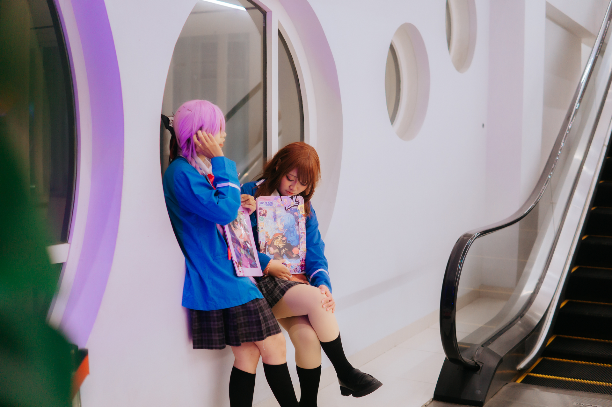
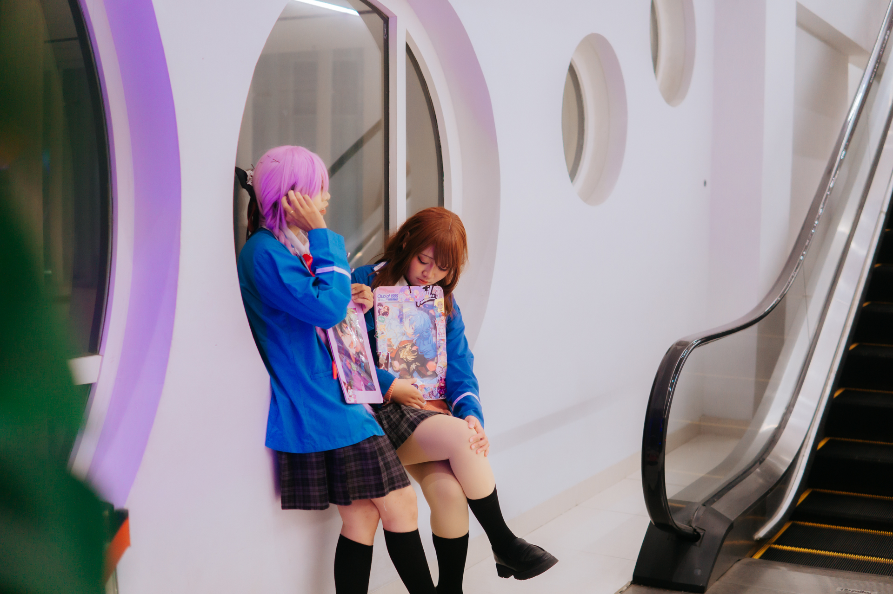

Myself
Halo! Namaku Alma Kayla Putri, salah satu mahasiswi Universitas Mulawarman, Fakultas Keguruan dan Ilmu Pendidikan, Program studi Pendidikan Komputer. Biasanya saat tidak ada kesibukan, aku mengisi waktu dengan bermain game. Selain itu aku juga memiliki hobby cosplay. Aku sudah mendalami hobby ini selama 2 tahun, banyak sekali pengalaman yang ku dapat selama 2 tahun terakhir. Ini dia beberapa foto diriku saat cosplay, biasanya cosplay di rumah untuk sekedar membuat konten atau di sebuah event.
 
